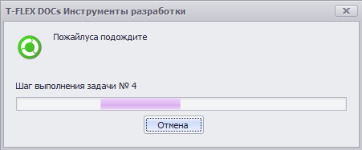

Диалог ожидания |
ДиалогОжидания - Объект для доступа к диалогу ожидания (WaitingDialogAccessor)
C#
// Показывает окно ожидания с кнопкой "Отмена" ДиалогОжидания.Показать("Пожалуйста, подождите", true); // Симуляция выполнения долгой задачи for (int i = 1; i <= 5; i++) { // Устанавливает текст над шкалой прогресса if (!ДиалогОжидания.СледующийШаг("Шаг выполнения задачи № " + i)) // Возвращает false, если нажата кнопка "Отмена" return; // Приостанавливает текущий поток на 2 секунды System.Threading.Thread.Sleep(TimeSpan.FromSeconds(2)); } // Скрывает окно ожидания ДиалогОжидания.Скрыть();
|
|
|---|
|
Данный диалог можно использовать только в макросах C# (тип макроса "Макрос C#") |
Результат:
